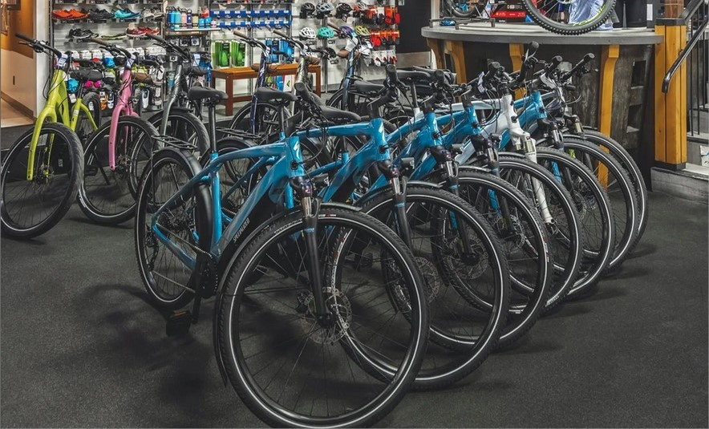
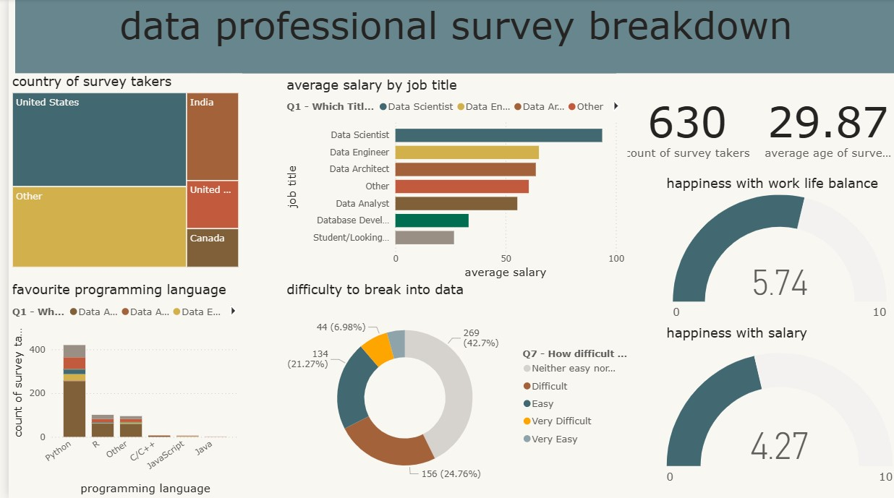

In this project i cleaned and transformed the data of world layoffs from 2020 - 2023 in SQL server.
This process comprised of removing duplicate rows, inconsistencies ,missing values as well as
standardizing the data. I went ahead to build an interactive visualization in powerBi to uncover trends
and highlight key insights
In this project, I cleaned and transformed a raw dataset of global freelancers using Excel.
The process involved removing inconsistencies, handling missing values,
and standardizing the data to ensure accuracy and usability for further analysis.

For this project, I worked with a Bike Sales dataset, applying data cleaning techniques
to prepare the data for analysis. I then explored sales trends using PivotTables and
created an interactive Excel dashboard to uncover key business insights.

In this project, I transformed a raw job survey dataset into actionable insights using Power BI.
The process included data cleaning,
applying calculated measures, and building interactive visualizations.
The final dashboard highlights key metrics such as average salaries by job role,
work-life balance ratings, and preferred programming languages,
helping stakeholders better understand trends in the data industry.